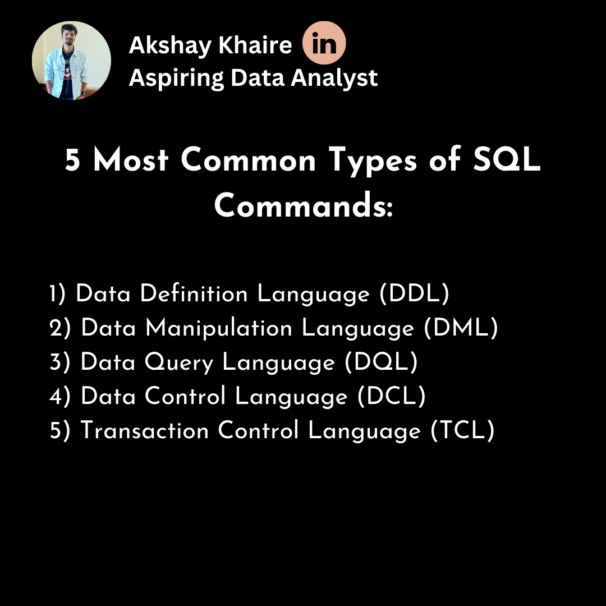
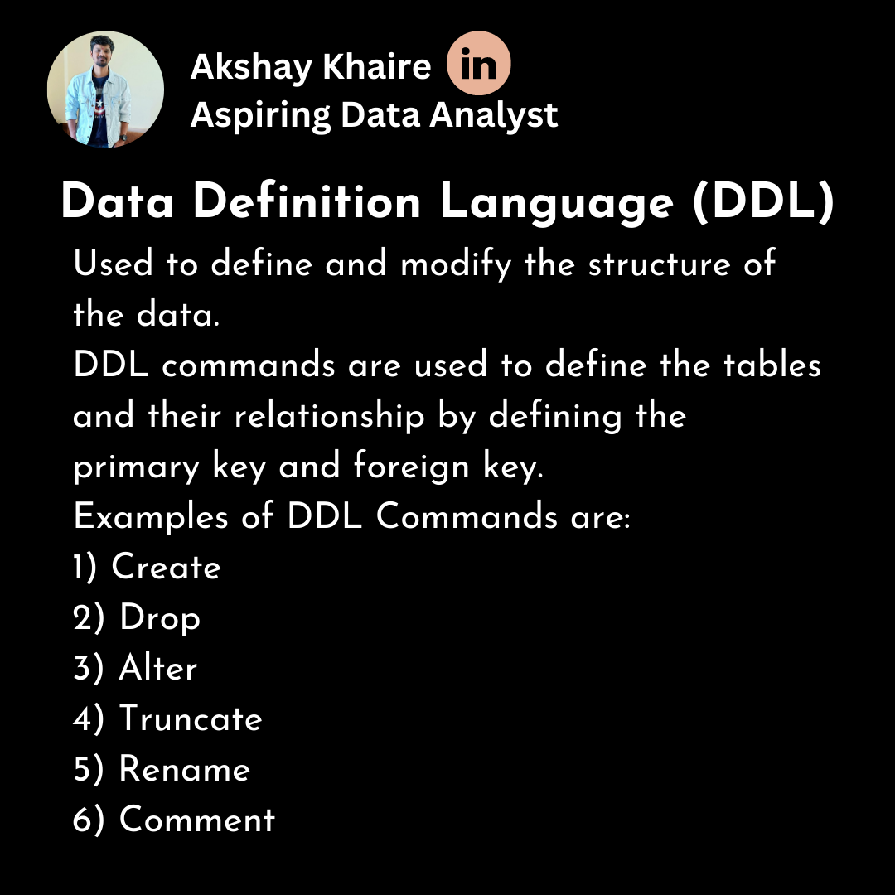

Music Store Data Analysis Using SQL SQL project to analyze online music store data. Analysis of Music store data and customer spending on each artist, genre in each country. View Project
 Post 1 (SQL) : SQL Commands In this post, We will learn about the five common types of SQL commands: 1) Data Definition Language (DDL) 2) Data Manipulation Language (DML) 3) Data Query Language (DQL) 4) Transaction Control Language (TCL) 5) Data Control Language (DCL) See Post
 Post 2 (SQL) : Data Definition Language In this post, We will learn about the difference between table and database, different types of data types used in SQL and different commands used in Data Definition Language (DDL). Learn more